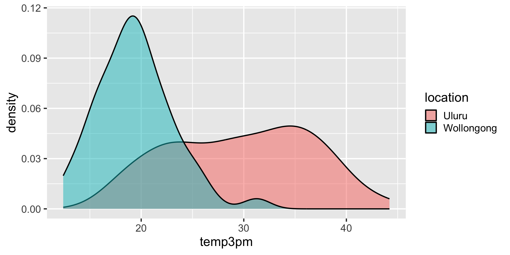
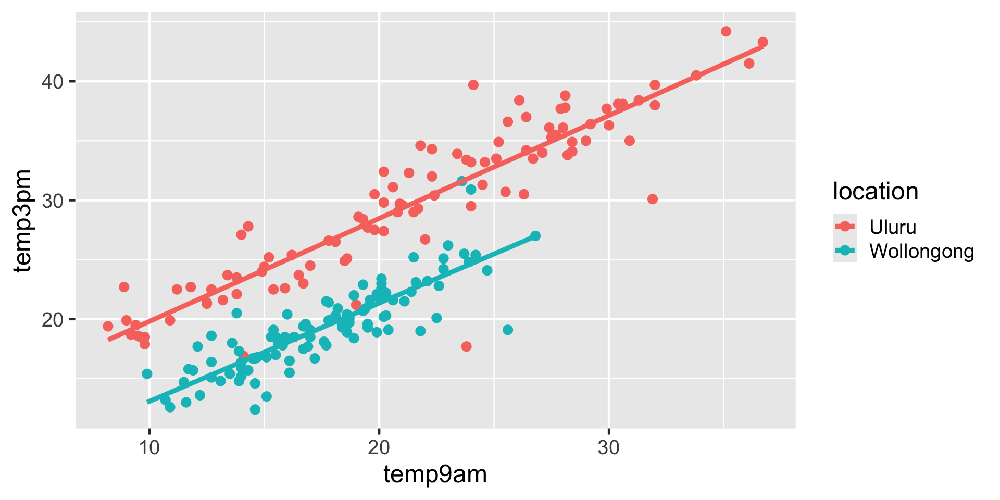
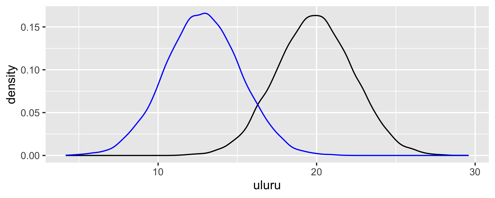

Extending the Normal Regression
The notes for this lecture are derived from Chapter 11 of the Bayes Rules! book
Rows: 200
Columns: 6
$ location <fct> Uluru, Uluru, Uluru, Uluru, Uluru, Uluru, Uluru, Uluru, U…
$ windspeed9am <dbl> 20, 9, 7, 28, 24, 22, 22, 4, 2, 9, 20, 20, 9, 22, 9, 24, …
$ humidity9am <int> 23, 71, 15, 29, 10, 32, 43, 57, 64, 40, 28, 30, 95, 47, 7…
$ pressure9am <dbl> 1023.3, 1012.9, 1012.3, 1016.0, 1010.5, 1012.2, 1025.7, 1…
$ temp9am <dbl> 20.9, 23.4, 24.1, 26.4, 36.7, 25.1, 14.9, 15.9, 24.6, 15.…
$ temp3pm <dbl> 29.7, 33.9, 39.7, 34.2, 43.3, 33.5, 24.0, 22.6, 33.2, 24.…\(\text{likelihood model:} \; \; \; Y_i | \beta_0, \beta_1, \sigma \;\;\;\stackrel{ind}{\sim} N\left(\mu_i, \sigma^2\right)\text{ with } \mu_i = \beta_0 + \beta_1X_{i1}\)
\(\text{prior models:}\)
\(\beta_0\sim N(\ldots, \ldots )\)
\(\beta_1\sim N(\ldots, \ldots )\)
\(\sigma \sim \text{Exp}(\ldots)\)
Considering a categorical predictor
\[X_{i2} = \begin{cases} 1 & \text{ Wollongong} \\ 0 & \text{ otherwise (ie. Uluru)} \\ \end{cases}\]
\(\text{likelihood model:} \; \; \; Y_i | \beta_0, \beta_1, \sigma \;\;\;\stackrel{ind}{\sim} N\left(\mu_i, \sigma^2\right)\text{ with } \mu_i = \beta_0 + \beta_1X_{i2}\)
\(\text{prior models:}\)
\(\beta_0\sim N(\ldots, \ldots )\)
\(\beta_1\sim N(\ldots, \ldots )\)
\(\sigma \sim \text{Exp}(\ldots)\)
For Uluru, \(X_{i2} = 0\) and the trend in 3pm temperature simplifies to
\[\beta_0 + \beta_1 \cdot 0 = \beta_0 \; .\] For Wollongong, \(X_{i2} = 1\) and the trend in 3pm temperature is
\[\beta_0 + \beta_1 \cdot 1 = \beta_0 + \beta_1 \; .\]
Simulating the Posterior
mean 10% 90% Rhat
(Intercept) 29.720510 29.016209 30.432417 0.9999003
locationWollongong -10.321964 -11.322672 -9.321884 0.9999647
sigma 5.495842 5.153241 5.855416 0.9999023Two Predictors
\(\text{likelihood model:}\) \(Y_i | \beta_0, \beta_1, \beta_2 \sigma \;\;\;\stackrel{ind}{\sim} N\left(\mu_i, \sigma^2\right)\text{ with } \mu_i = \beta_0 + \beta_1X_{i1} + \beta_2X_{i2}\)
\(\text{prior models:}\)
\(\beta_0\sim N(m_0, s_0 )\)
\(\beta_1\sim N(m_1, s_1 )\)
\(\beta_2\sim N(m_2, s_2 )\)
\(\sigma \sim \text{Exp}(l)\)
In Uluru, \(X_{i2} = 0\) and the trend in the relationship between 3pm and 9am temperature simplifies to
\[\beta_0 + \beta_1 X_{i1} + \beta_2 \cdot 0 = \beta_0 + \beta_1 X_{i1} \; .\]
In Wollongong, \(X_{i2} = 1\) and the trend in the relationship between 3pm and 9am temperature simplifies to
\[\beta_0 + \beta_1 X_{i1} + \beta_2 \cdot 1 = (\beta_0 + \beta_2) + \beta_1 X_{i1} \; .\]
first_50 <- head(weather_model_3_df, 50)
ggplot(weather_WU, aes(x = temp9am, y = temp3pm)) +
geom_point(size = 0.01) +
geom_abline(data = first_50, size = 0.1,
aes(intercept = `(Intercept)`, slope = temp9am)) +
geom_abline(data = first_50, size = 0.1,
aes(intercept = `(Intercept)` + locationWollongong,
slope = temp9am), color = "blue")Posterior Predictive Model
\(\text{likelihood model:}\) \(Y_i | \beta_0, \beta_1, \beta_2, \beta_3 \sigma \;\;\;\stackrel{ind}{\sim} N\left(\mu_i, \sigma^2\right)\text{ with }\) \(\mu_i = \beta_0 + \beta_1X_{i2} + \beta_2X_{i3} + \beta_3X_{i2}X_{i3}\)
\(\text{prior models:}\)
\(\beta_0\sim N(m_0, s_0 )\)
\(\beta_1\sim N(m_1, s_1 )\)
\(\beta_2\sim N(m_2, s_2 )\)
\(\beta_3\sim N(m_3, s_3 )\)
\(\sigma \sim \text{Exp}(l)\)
In Uluru, \(X_{2} = 0\) and the trend in the relationship between temperature and humidity simplifies to
\[\mu = \beta_0 + \beta_2 X_{3} \; .\]
In Wollongong, \(X_{2} = 1\) and the trend in the relationship between temperature and humidity simplifies to
\[\mu = \beta_0 + \beta_1 + \beta_2 X_{3} + \beta_3 X_{3} = (\beta_0 + \beta_1) + (\beta_2 + \beta_3) X_3 \; .\]
10% 50% 90%
(Intercept) 36.418 37.595 38.770
locationWollongong -24.796 -21.853 -18.880
humidity9am -0.214 -0.190 -0.166
locationWollongong:humidity9am 0.198 0.245 0.292
sigma 4.194 4.467 4.773\[\begin{array}{lrl} \text{Uluru:} & \mu & = 37.595 - 0.19 \text{ humidity9am} \\ \text{Wollongong:} & \mu & = (37.595 - 21.853) + (-0.19 + 0.245) \text{ humidity9am}\\ && = 15.742 + 0.055 \text{ humidity9am}\\ \end{array}\]
Do you need an interaction term?
Context.
Visualizations.
Hypothesis tests.
More than two predictors
\(\text{likelihood model:} \; \; \; Y_i | \beta_0, \beta_1,\beta_2,...\beta_p, \sigma \;\;\;\stackrel{ind}{\sim} N\left(\mu_i, \sigma^2\right)\text{ with }\) \(\mu_i = \beta_0 + \beta_1X_{i1} + \beta_2X_{i2} + \ldots +\beta_pX_{ip}\)
\(\text{prior models:}\)
\(\beta_0, \beta_1,\beta_2, ...,\beta_p\sim N(\ldots, \ldots )\)
\(\sigma \sim \text{Exp}(\ldots)\)
Model evaluation and comparison
| Model | Formula |
|---|---|
weather_model_1 |
temp3pm ~ temp9am |
weather_model_2 |
temp3pm ~ location |
weather_model_3 |
temp3pm ~ temp9am + location |
weather_model_4 |
temp3pm ~ . |
# Posterior predictive models for weather_model_1
ppc_intervals(weather_WU$temp3pm,
yrep = predictions_1,
x = weather_WU$temp9am,
prob = 0.5, prob_outer = 0.95)
# Posterior predictive models for weather_model_2
ppc_violin_grouped(weather_WU$temp3pm,
yrep = predictions_2,
group = weather_WU$location,
y_draw = "points")| model | mae | mae scaled | within 50 | within 95 |
| weather model 1 | 3.285 | 0.789 | 0.4 | 0.97 |
| weather model 2 | 3.652 | 0.661 | 0.49 | 0.94 |
| weather model 3 | 1.142 | 0.483 | 0.67 | 0.96 |
| weather model 4 | 1.207 | 0.522 | 0.63 | 0.95 |